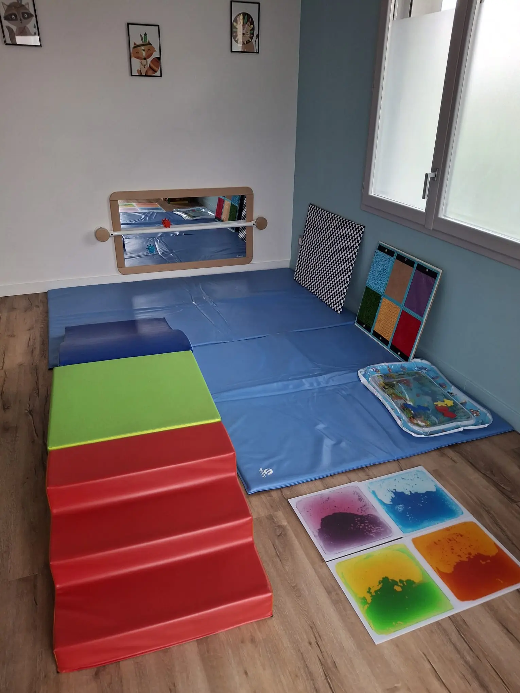
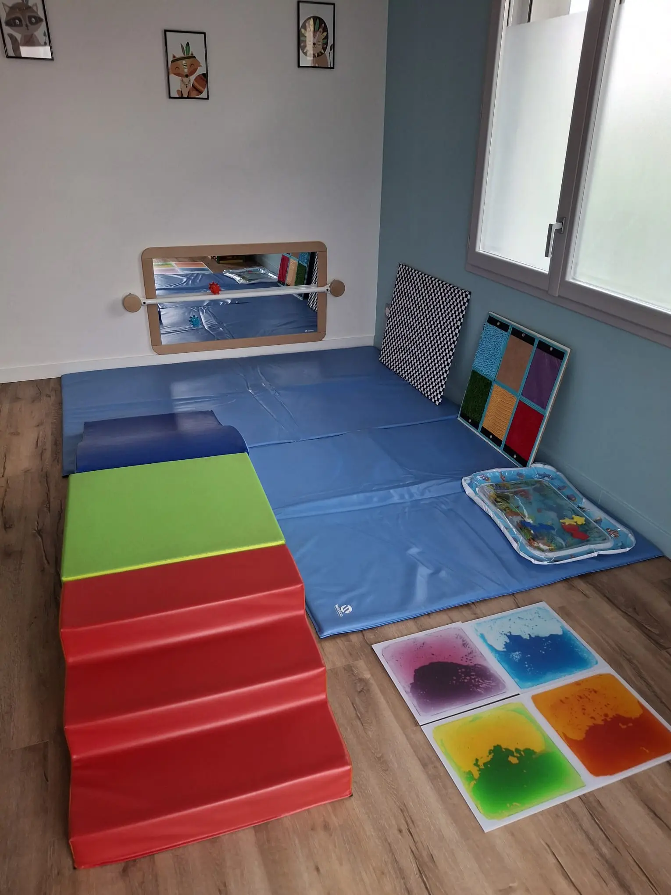

Kinésithérapie
La Kinésithérapie pédiatrique prend en charge les pathologies ou les difficultés qui touchent l'enfant dès la naissance jusqu'à l'adolescence :
- Affections musculo-squelettiques du nourrisson et de l'enfant : Torticolis musculaire, déformation du crâne, malposition des pieds, dysplasie de la hanche, troubles de la marche, scoliose...
- Affections neuromusculaires : Retard du neurodéveloppement, paralysie brachiale, autres pathologies neurologiques...
- Affections respiratoires : Bronchiolite du nourrisson, asthme...
- Affections oro-myo-faciales : Rééducation linguale, frein de langue, respiration buccale...
- Affections urologiques : Énurésie, encoprésie, fuites urinaires chez l'enfant...
Prise en charge de la rééducation uro-gynécologique dans toutes les étapes de la vie :
- Pré ou post-partum
- Rééducation abdominale
- Prise en charge des fuites urinaires
- Des douleurs pelviennes
- Endométriose
- Pose de pessaire
Cabinet équipé d'un appareil d'échographie et de tecarthérapie (Indiba).
üíå Soliciter des informations 
